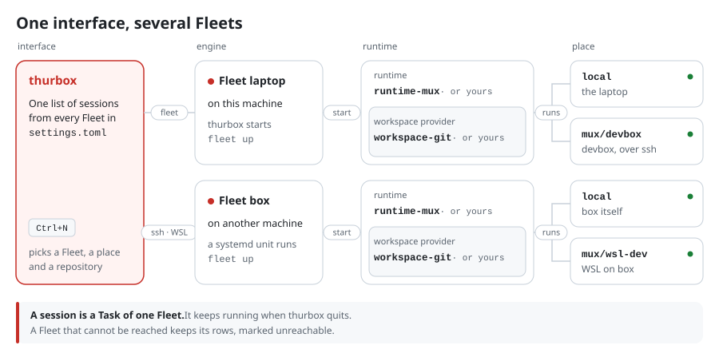

Fleet starts no process itself. It asks a runtime. A runtime is a role: any
program that answers the runtime protocol
at a place. Fleet ships two. runtime-mux, the default, runs each session in a tmux
window (psmux on native Windows). examples/runtimes/tmux.sh is a minimal one, and
you can write your own for containers, VMs or a remote service. fleet runtime check
tests a runtime against the protocol. runtime-herdr, the other one Fleet ships,
runs each session in a herdr-core terminal, which herdr's desktop app shows:
Fleet in herdr sets it up.
To turn a workspace URL into a directory, a runtime can run a workspace
provider. workspace-git is the provider Fleet ships, for git URLs;
runtime-mux runs whichever provider its workspace.program setting
names (two roles).

A place is where a runtime runs a session, named
<runtime>/<place>. local is the Fleet's own machine, and
it is the place fleet init sets up. The runtime also makes each session's
workspace there.

Runtimes and places are tables in Fleet's config; see Fleet's configuration and Fleets and places.